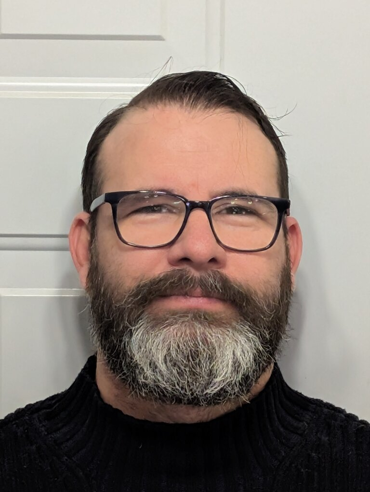

Horacio Velarde Riquelme | WDD 130
Hi there! My name is Horacio Velarde, I was born and raised in Mexico but I live in Medicine Hat, Alberta, Canada. I love playing guitar, woodworking and being around people. For the last twenty two years I've lived in Alberta. Here is where I got married, joined the Church of Jesus Christ of latter-Day Saints and all of my five children were born.